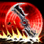
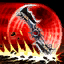

Manual de Noxus
Draven é um atirador (ADC) explosivo e de alto risco/recompensa, que se destaca pelo seu potencial de snowball e jogadas mecânicas com seus machados giratórios. Ele é jogado principalmente na rota inferior (bot lane), onde busca dominar a fase de rotas com pressão constante e agressividade. Sua função é aniquilar alvos prioritários rapidamente, aproveitando sua passiva que recompensa eliminações com ouro extra, e transformar vantagens iniciais em domínio total da partida.


 
